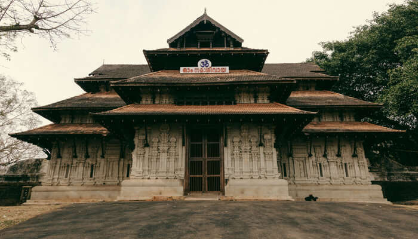

THRISSUR

Thrissur Temple
Vadakkumnathan Temple is an ancient Hindu temple dedicated to Shiva at city of Thrissur, of Kerala state in India. This temple is a classical example of the architectural style of Kerala and has one monumental tower on each of the four sides in addition to a kuttambalam.